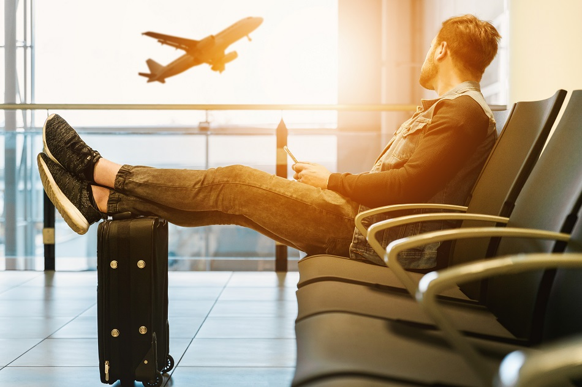

Viagem é sinônimo de planejamento. Desde o momento em que se define o destino até a hora de embarcar, há uma série de pequenas coisas que têm que ser feitas para evitar verdadeiros "perrengues" durante as merecidas férias. Entramos em contato com especialistas para listar o que não pode faltar antes de qualquer viagem. "Um viajante não deve levar mais do que consegue carregar", recomenda a agente de viagens Angélica Martins. Ela ressalta também a importância de se informar sobre as restrições de bagagem em voos, para evitar prejuízos na hora do embarque. De acordo com a Agência Nacional de Aviação Civil (Anac), os passageiros de voos nacionais não podem embarcar com: armas, objetos pontiagudos ou cortantes e líquidos inflamáveis. Para esta profissional de turismo, é importante organizar os itens da bagagem levando em conta a forma com que irá transportá-los e se for em voos, sem que se pague pelo excesso de peso na hora de despachar. A agente recomenda priorizar uma mala leve e resistente, ter em mãos um adaptador universal de tomadas, os carregadores dos aparelhos eletrônicos e os endereços dos hotéis e roteiros anotados, caso fique sem internet.
Com as novas regras para o transporte de bagagem na cabine, o viajante precisa se preparar para economizar no espaço caso não tenha optado pelo despacho de bagagens. Recomendamos sempre, conferir a previsão do tempo no destino para as datas planejadas da viagem. "Dentro disso, eu consigo ver que tipo de roupa eu vou precisar levar. Um segundo ponto importante é entender o tipo de transporte que eu vou utilizar, porque tem a questão do tamanho da mala." De acordo com a Associação Brasileira das Empresas Aéreas (Abea), passageiros de voos nacionais têm direito a embarcar – sem custo adicional – com uma bagagem de mão de no máximo 10 kg e 55 cm e altura
Para viagens urbanas, looks do dia a dia são a pedida. É importante priorizar o conforto e ficar de olho nas mudanças do tempo, afinal, se o roteiro inclui trilhas não deixe de levar calçados próprios para caminhada, roupa térmica e camisetas dry-fit. Se fizer frio, jaquetas com gorro que ocupem pouco espaço quando dobradas, além de luvas e cachecóis. Calçados: Para bater perna em cidades, os calçados já usados são melhores que os novos – eles estão amaciados. Em trilhas, o ideal é usar tênis ou botas – também já amaciadas. Chinelos de borracha são úteis não só para ir à praia, mas também para encarar chuveiros compartilhados e até passear em dias de muito calor.
